![[ANA JDG] Asterix and the Great Rescue - Megadrive](../vi/6oUXi0ckLmA/default.jpg)
![[ Présentation pour la chaîne Grenier des Joueurs ] JDG Prod](../art/SHAR.6419.583.2.jpg)


Nous sommes en début 2014,la Wii U,la Playstation 4 et la Xbox One sont les consoles actuelles.
En près de 20 ans,nous avons dit adieu à Atari,sa dernière console fût la jaguar (1996),et à SEGA,sa dernière console fût la Dreamcast (2004).
Nous avons dit bonjour à Philips,pour sa CD-i (1992) mais elle n'a pas fait long feu
(elle n'est plus vendu pour un usage domestique),à Sony,pour ses Playstation et à Microsoft pour ses Xbox.
Voici mon avis sur chaque marque de console de jeux-vidéos:
Nintendo: La marque qui a laisser des traces indélébiles sur nos manettes,notamment la croix directionnelle,L1 et R1,les vibrations,...
Sans Nintendo,Sony n'aurait pas eût sa première Playstation.
SEGA: La marque de jeux-vidéo et de console de jeux-vidéos (comme Nintendo) qui a créer la première console avec internet sans foiré sa rapidité et en facilitant la programmation sur sa machine grâce à Windows CE (je parle de la Dreamcast).
Sony: Le géant technologique créateur de walkman rejoint le marché des consoles de jeux-vidéos en créant le support CD de la Playstation.
Il tua SEGA avec sa publicité abusive pour la Playstation 2.
Microsoft: La société de Windows rentre sur le marché des consoles après la défaite de SEGA pour lutter contre le fléau "Sony" (malgré qu'il l'imite dans ses capacités),il a même eût l'idée de racheter SEGA mais Bill Gates (Patron de Microsoft) ne fût pas d'accord.
(il ne pensait pas que SEGA puisse avoir assez de muscles pour arrêter SONY)
Atari: La marque technologique qui a fait la première console grand public mais qui assista au krash du jeux-vidéo (1983) .
Le krash du jeux-vidéo lui fût perdre énormément d'argent.
Philips: Pour montrer ses capacités dans le support CD,Philips rentre avec la CD-i
(créer par les grands de l'électronique (Philips, Sony et Matsushita) )
sur le marché des consoles de jeux-vidéos mais malgré le travail de 3 grandes entreprises technologiques,ses jeux-vidéos sont remplis de bugs ou des cinématiques moches
(vous pouvez les retrouver dans les YouTube Poop) et ruinant certaine licence comme Zelda et Mario (Nintendo voulait tester la console de Philips,le résultat est désastreux).
Voila,merci de m'avoir lu et j'espère vous avoir appris quelques chose sur ces marques de consoles de jeux-vidéos!
KidpaddleetcieGlin
Description :
Le Blog d'une personne aillant découvert internet en 2007 qui partage une partie de sa vie mais surtout ses réflexions, ses découvertes et ses cours!
Bon, je ne vous garantit pas que 100% du contenu est fiable mais aux moins je l'approuve! :)
N'oubliez pas de me retrouver sur les autres sites internet du réseaux KidpaddleetcieGlin retrouvable dans le premier article de chaque page. ^-^
Bon, je ne vous garantit pas que 100% du contenu est fiable mais aux moins je l'approuve! :)
N'oubliez pas de me retrouver sur les autres sites internet du réseaux KidpaddleetcieGlin retrouvable dans le premier article de chaque page. ^-^
Je bosse actuellement pour la chaîne Grenier des Joueurs
Son morceau préféré
Retour au blog de KidpaddleetcieGlin
0
|
Mario est à la base un jardinier (Ce qui explique la présence de plante et de champignons) mais à cause de la qualité graphique de l'époque,Nintendo décida de se fier à ses consommateurs en acceptant que Mario est un plombier!
Mario est rendu célèbre pour plusieurs raisons:
Mario est rendu célèbre pour plusieurs raisons:
1.C'est un Italien (Europe) qui habite à Brooklyn (Amérique) créer par des Japonais (Asie)!
2.
2.
Tu es colérique? T'es Bowser!
Tu es trop bonne? T'es Peach!
Tu es un petit gros? T'es Mario!
Tu es un grand maigre? T'es Luigi!
Tu es un gourmet? T'es Yoshi!
Tu es radin?T'es Wario!
...
3. SuperMarioBros est un des tout premier jeu offrant le scrolling horizontal!
4.Le Game&Watch "Donkey Kong" est le premier à avoir bénéficier de la croix directionnelle!
5."Donkey Kong" sur arcade est le tout premier jeu-vidéo à avoir eût des cinématiques!
6.Il y a plein de princesse: Peach,Daisy,Harmonie,... (Nintendo devrait vendre des posters grandeur-nature :D)!
7.Le gameplay de chaque Mario (créer par Nintendo)est IRRÉPROCHABLE!
8.Le graphisme de chaque Mario (créer par Nintendo) est MAGNIFIQUE!
9.Les musiques dans chaque Mario (créer par Nintendo) sont ENTRAÎNANTES!
10.Les ennemis sont légions et parfois pas cons!
11.En kart,en RPG,en Party,en Smash,... Mario est excellent!
12.Il vient de Shigeru Miyamoto,le créateur de la manette qui vibre,la 3D dans les jeux-vidéos avec Star Fox sur SNES,les sauvegardes dans les cartouches et les boutons sous les index (L et R)!
Tu es trop bonne? T'es Peach!
Tu es un petit gros? T'es Mario!
Tu es un grand maigre? T'es Luigi!
Tu es un gourmet? T'es Yoshi!
Tu es radin?T'es Wario!
...
3. SuperMarioBros est un des tout premier jeu offrant le scrolling horizontal!
4.Le Game&Watch "Donkey Kong" est le premier à avoir bénéficier de la croix directionnelle!
5."Donkey Kong" sur arcade est le tout premier jeu-vidéo à avoir eût des cinématiques!
6.Il y a plein de princesse: Peach,Daisy,Harmonie,... (Nintendo devrait vendre des posters grandeur-nature :D)!
7.Le gameplay de chaque Mario (créer par Nintendo)est IRRÉPROCHABLE!
8.Le graphisme de chaque Mario (créer par Nintendo) est MAGNIFIQUE!
9.Les musiques dans chaque Mario (créer par Nintendo) sont ENTRAÎNANTES!
10.Les ennemis sont légions et parfois pas cons!
11.En kart,en RPG,en Party,en Smash,... Mario est excellent!
12.Il vient de Shigeru Miyamoto,le créateur de la manette qui vibre,la 3D dans les jeux-vidéos avec Star Fox sur SNES,les sauvegardes dans les cartouches et les boutons sous les index (L et R)!
VOILA,maintenant,MUSIQUE!!!!!!
Ce samedi 25 janvier 2014,j'ai repris une bonne vieille animation sur Shigeru Miyamoto:
N'aiment pas l'audio (Gangster Trippin-Fatboy Slim),j'ai décider de le remixer pour en faire comme une histoire avec les sons des SuperMario,The Legend Of Zelda et Donkey Kong!
Voici le résultat:
C'est vraiment un pure bonheur de la revoir dans ses deux versions :)
Bien sur,j'ai quand même rien modifié de la partie visuelle et je n'ai pas signer
(j'm'en fout,ch'uis un lapin)!
Vous vous souvenez de ce sons créer le 20 juillet 2013?
-----------------------------------------------------------------------------------------------------------------------------------------------------
Les paroles sont à ce lien:
http://kidpaddleetcieglin.skyrock.com/3175203949-Essai-Rap-pour-Mario-XD-lol.html
La musique d'origine:
http://www.youtube.com/watch?v=TmGQAjCVi0U
-----------------------------------------------------------------------------------------------------------------------------------------------------
J'en ai créer un clip avec des extraits d'interview de Shigeru Myamoto:
Et je l'ai sous-titré après lui avoir trouvé le titre final "Never The End With Nintendo":
Si vous allez sur YouTube (sur sa page de visionnement) vous pouvez appuyez sur un gros bouton "Remixer cette vidéo" qui vous l'a postera sur votre chaîne YouTube!
Si vous ne savez/voulez pas lire sur YouTube,la version final est également sur Dailymotion:
Créons un même internet ensemble ^_^ !
-----------------------------------------------------------------------------------------------------------------------------------------------------
Les paroles sont à ce lien:
http://kidpaddleetcieglin.skyrock.com/3175203949-Essai-Rap-pour-Mario-XD-lol.html
La musique d'origine:
http://www.youtube.com/watch?v=TmGQAjCVi0U
-----------------------------------------------------------------------------------------------------------------------------------------------------
J'en ai créer un clip avec des extraits d'interview de Shigeru Myamoto:
Et je l'ai sous-titré après lui avoir trouvé le titre final "Never The End With Nintendo":
Si vous allez sur YouTube (sur sa page de visionnement) vous pouvez appuyez sur un gros bouton "Remixer cette vidéo" qui vous l'a postera sur votre chaîne YouTube!
Si vous ne savez/voulez pas lire sur YouTube,la version final est également sur Dailymotion:
Créons un même internet ensemble ^_^ !
Je me suis amusé à d'abord créer une maquette en LEGO et je l'ai refaite dans Minecraft!
Par contre,j'ai du faire quelque petit calcul:
Sur les cubes LEGO,il y a des embouts,les petits cylindres!
J'ai donc pris les proportions comme ça:
1 embout=1 cube Minecraft!
Du coup,1 cube LEGO = 4 cubes Minecraft !
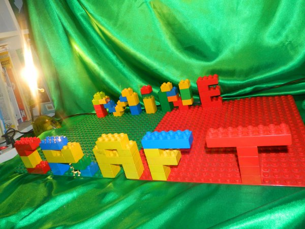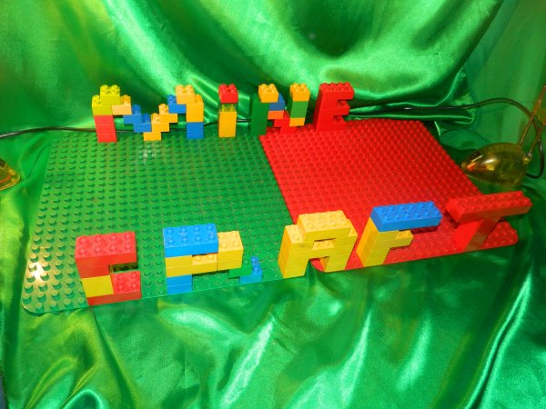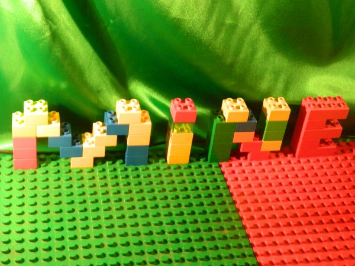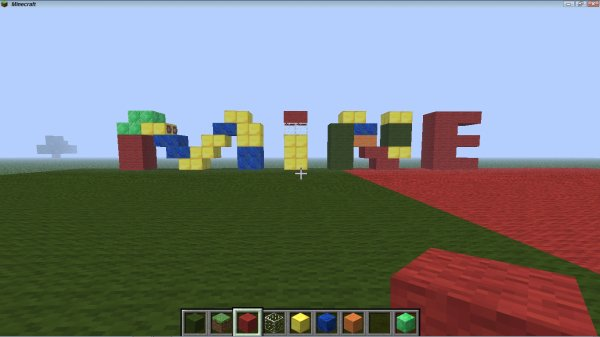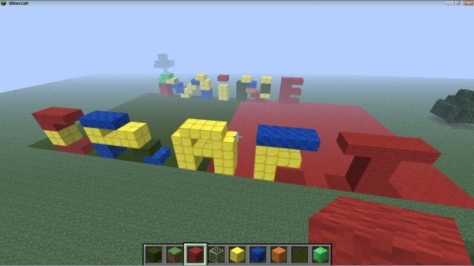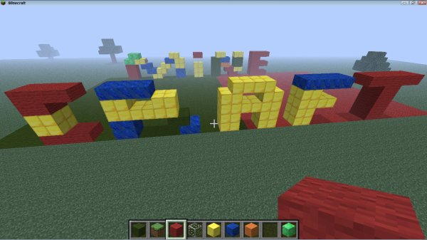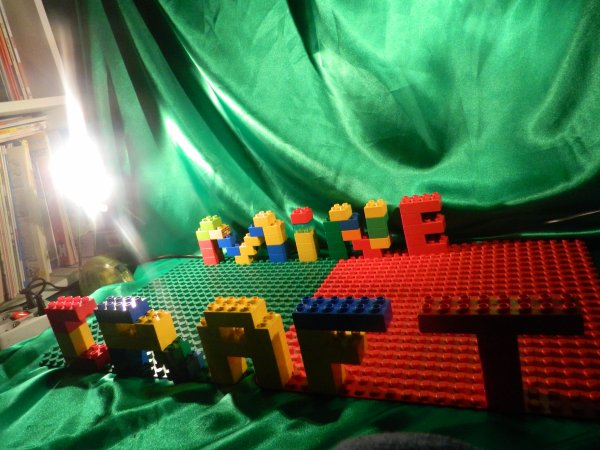
Par contre,j'ai du faire quelque petit calcul:
Sur les cubes LEGO,il y a des embouts,les petits cylindres!
J'ai donc pris les proportions comme ça:
1 embout=1 cube Minecraft!
Du coup,1 cube LEGO = 4 cubes Minecraft !
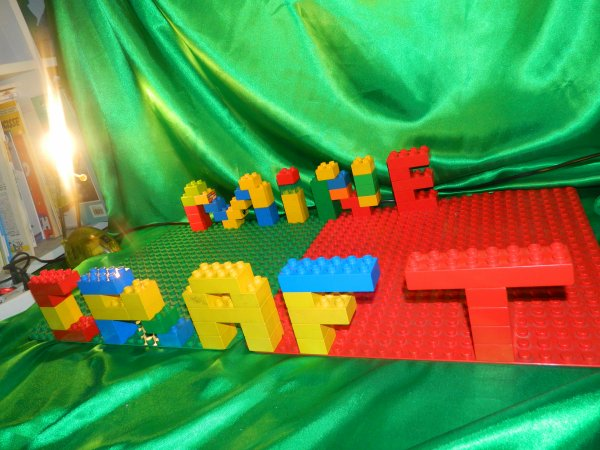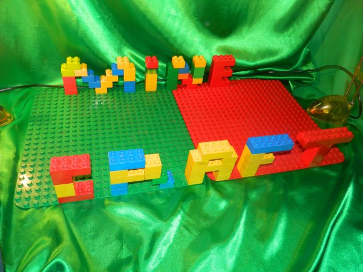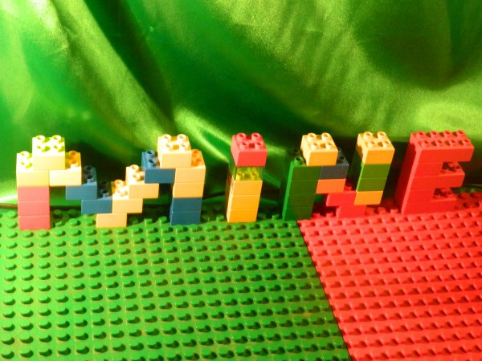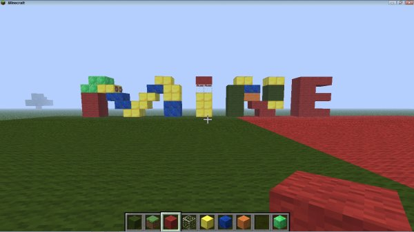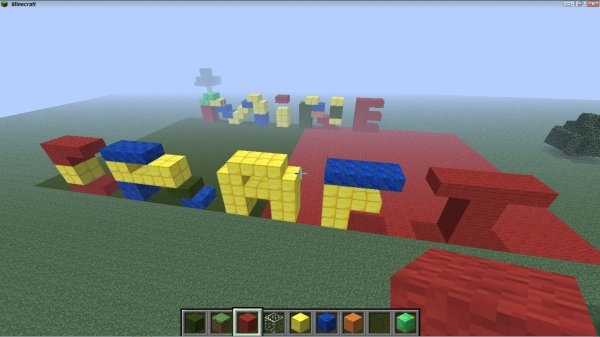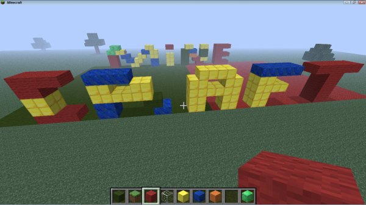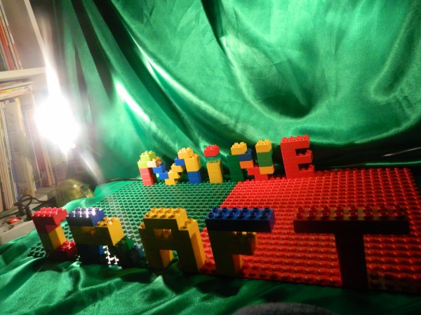
Depuis quelque jours,Google+ semble devenir important pour garder la liberté de communiquer entre YouTubeurs!
Les commentaires YouTube ont disparu pour faire place à des commentaires de Google+!
Du coup,pour communiquer entre YouTubeur...il faut avoir Google+!
Google+ est un réseau social,comme Facebook,lancé par Google le 28 juin 2011 (merci Wikipédia).
Il faut savoir que ce n'est pas le premier service de réseau social de Google:
- Orkut: créer en Janvier 2004
- Wave: créer en Septembre 2009
- Buzz: créer en Février 2010
Tous on été supprimer fautes de n'avoir aucune popularité!
Google+ aurait pût suivre la ligné de ses antécédents mais Google changea de stratégie pour le faire connaître:
"Lorsque Google présenta son nouveau réseau social encore sous version bêta, l'entreprise a décidé de commencer comme avec Gmail. Google a donc distribué des invitations à certaines personnalités du monde informatique. Et Google compte donc disséminer grâce à ces personnes dans tout le web, en ajoutant un aspect de privilège pour celui qui reçoit l'invitation. Ainsi, peu de temps après avoir ouvert ses portes, le système n'accepte plus de nouveaux entrants, pour cause de saturation et de trop forte demande, dixit Google."
( Référence: http://fr.wikipedia.org/wiki/Google%2B )
Le 20 septembre 2011, le service est ouvert aux utilisateurs sans invitation à tout utilisateur qui le souhaite!
(encore un copier-collé de Wikipédia)
Maintenant,Google+ a divers différence avec Facebook:
-Les groupes de contact se nomme des "cercles",
-Communiquer VIA Google Talk sur PC,IPhone,Android et SMS.
-Hangouts qui permet de communiquer en vidéo avec jusqu'à 10 personnes en simultané et vous pouvez envoyé votre conversation directement sur YouTube,
-Google permet depuis mars 2013 d'utiliser des Gifs animés en image de profil sur Google +!
Voila!
YouTube a donc perdu ses fonctions de communauté au profit de Google+!
Vous pouvez toujours regarder des vidéos,en poster et les partager sur les réseaux sociaux MAIS vous ne pouvez plus commenter sur le site SI vous n'avez pas de compte Google+!
Maintenant,je me pose une question de mentalité et de logique:
Un mec de Google+ est-il plus impliqué dans la conception de vidéo qu'un YouTubeur?
Et je me répond:
Un mec sur Google+ ne sait pas faire nécessairement des vidéos et ne connais pas nécessairement la mentalité d'un YouTubeur !
Le mec postera donc un commentaire non-constructif dans la majorité des cas!
Par contre,Google+ vous offre les même possibilité de post que Facebook mais avec plus de sécurité et moins de accès de personnalisation (Comme YouTube aujourd'hui)!
Par contre,Facebook est plus addictif mais moins bien organisé!
À vous de choisir,Google+ ou non?
Par-contre,c'est gratuit mais il y a un peu de PUB! ;)
...et si vous ne désirez pas donner votre présence à Google sur YouTube et Google+,vous pouvez aller voir sur Facebook et Dailymotion! ;)
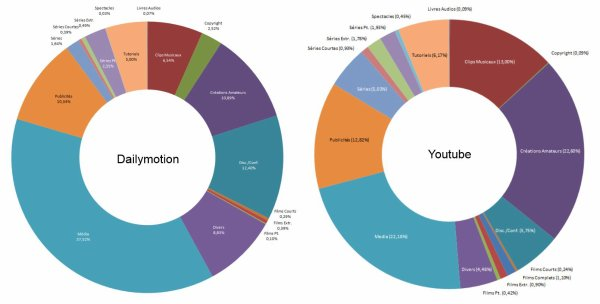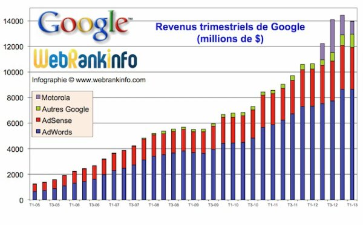
Les commentaires YouTube ont disparu pour faire place à des commentaires de Google+!
Du coup,pour communiquer entre YouTubeur...il faut avoir Google+!
Google+ est un réseau social,comme Facebook,lancé par Google le 28 juin 2011 (merci Wikipédia).
Il faut savoir que ce n'est pas le premier service de réseau social de Google:
- Orkut: créer en Janvier 2004
- Wave: créer en Septembre 2009
- Buzz: créer en Février 2010
Tous on été supprimer fautes de n'avoir aucune popularité!
Google+ aurait pût suivre la ligné de ses antécédents mais Google changea de stratégie pour le faire connaître:
"Lorsque Google présenta son nouveau réseau social encore sous version bêta, l'entreprise a décidé de commencer comme avec Gmail. Google a donc distribué des invitations à certaines personnalités du monde informatique. Et Google compte donc disséminer grâce à ces personnes dans tout le web, en ajoutant un aspect de privilège pour celui qui reçoit l'invitation. Ainsi, peu de temps après avoir ouvert ses portes, le système n'accepte plus de nouveaux entrants, pour cause de saturation et de trop forte demande, dixit Google."
( Référence: http://fr.wikipedia.org/wiki/Google%2B )
Le 20 septembre 2011, le service est ouvert aux utilisateurs sans invitation à tout utilisateur qui le souhaite!
(encore un copier-collé de Wikipédia)
Maintenant,Google+ a divers différence avec Facebook:
-Les groupes de contact se nomme des "cercles",
-Communiquer VIA Google Talk sur PC,IPhone,Android et SMS.
-Hangouts qui permet de communiquer en vidéo avec jusqu'à 10 personnes en simultané et vous pouvez envoyé votre conversation directement sur YouTube,
-Google permet depuis mars 2013 d'utiliser des Gifs animés en image de profil sur Google +!
Voila!
YouTube a donc perdu ses fonctions de communauté au profit de Google+!
Vous pouvez toujours regarder des vidéos,en poster et les partager sur les réseaux sociaux MAIS vous ne pouvez plus commenter sur le site SI vous n'avez pas de compte Google+!
Maintenant,je me pose une question de mentalité et de logique:
Un mec de Google+ est-il plus impliqué dans la conception de vidéo qu'un YouTubeur?
Et je me répond:
Un mec sur Google+ ne sait pas faire nécessairement des vidéos et ne connais pas nécessairement la mentalité d'un YouTubeur !
Le mec postera donc un commentaire non-constructif dans la majorité des cas!
Par contre,Google+ vous offre les même possibilité de post que Facebook mais avec plus de sécurité et moins de accès de personnalisation (Comme YouTube aujourd'hui)!
Par contre,Facebook est plus addictif mais moins bien organisé!
À vous de choisir,Google+ ou non?
Par-contre,c'est gratuit mais il y a un peu de PUB! ;)
...et si vous ne désirez pas donner votre présence à Google sur YouTube et Google+,vous pouvez aller voir sur Facebook et Dailymotion! ;)
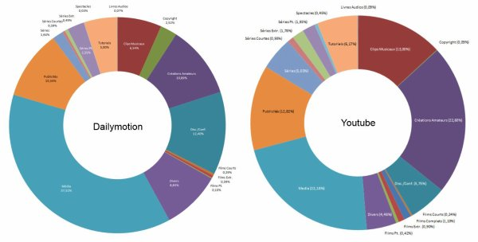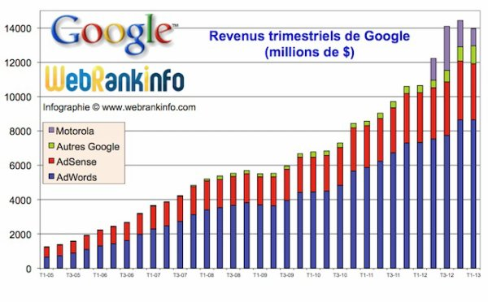

Partie présentation
Aienkei est un YouTubeur assez philosophe mais excellent podcasteur,son débit est agréable et il sait manier les mots sans perdre le fil conducteur...et tout ça en n'exercent aucune coupure!Aienkei est donc un podcasteur hors norme car il s'applique fortement dans ses interactions avec ses visionneurs et il ne manque pas de les taquiner des fois où l'humour doit être introduite!
Aienkei est également un YouTubeur assez intelligent et compréhensif envers les gens qui sont perdus et qui perdent leurs temps à s'abrutir sur des vidéos qui ne les apprennent rien.
En effet,Aienkei possède un potentiel dans le milieu de la réflexion hors du commun,ce qui en fait son atout majeur!
Aienkei semble être un grand passionné de jeux-vidéos et il semble également qui suit l'actualité à la loupe pour nous concocter des vidéos de grandes qualités avec beaucoup d'infos...et tout ça gratuitement sur le vieux YouTube!
Ce qui est aussi intéressant chez Aienkei,c'est sa présence dans les commentaires de ses vidéos car beaucoup de gens célèbre sur YouTube oublis de communiquer des fois avec leurs fans ou pire...mais ne nous attardons pas sur ces cas!
Les vidéos de Aienkei ne peuvent se résumer à un genre mais la technique employé majoritairement est le commentary (il pose sa voix pour commenter un contenu ou débattre sur un sujet)!
Partie avis personnel
Je recommande donc Aienkei à tout ceux qui veulent entendre parler de nouveauté dans les jeux-vidéos,de apprendre des détails sur des jeux-vidéos et de tirer des conclusions sur l'univers des jeux-vidéos!Une vidéo de Aienkei pour illustrer un peu:
Les liens vers les sites du réseaux d'Aienkei:
YouTube: http://www.youtube.com/user/AienkeiFacebook: https://www.facebook.com/Aienkei
Twitter: https://twitter.com/Aienkei
Google+: https://plus.google.com/106015725063467518181/posts
Dailymotion : http://www.dailymotion.com/Aienkei
L'article lu en vidéo:
Version YouTube:Version Dailymotion
Par contre,il a aussi (il semblerait) un compte sur Hooper.fr http://www.hooper.fr/users/aienkei
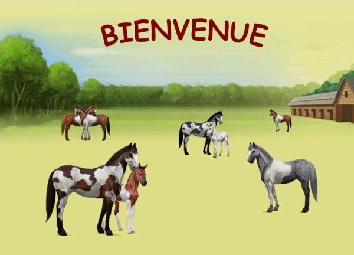
Cliquez sur le lien pour devenir un partenaire et me faire gagner de la thune!
Sinon,je peux vous aider en ce qui est "économie" dans le jeu et je peux vous sortir d'impasse financières!
Mais le plus important,c'est de jouer en communauté avec des gens que vous apprenez à connaître et à profiter de leurs parties ;) !
Pour ma part,j'ai FanYoshiBleu qui est ma marraine et...elle m'aide tout le temps quand je me plante!
(voici un petit lien pour les initiés qui veulent se faire de la PUB http://equideow-fiche.skyrock.com/)
Commencer ce jeu avec un parrain donne des bonus supplémentaires!
-2 000 Equus dans la réserve (au lieu de 500),
-Un amis (le parrain),
-De l'aide (évidemment).
Sinon,je peux vous aider en ce qui est "économie" dans le jeu et je peux vous sortir d'impasse financières!
Mais le plus important,c'est de jouer en communauté avec des gens que vous apprenez à connaître et à profiter de leurs parties ;) !
Pour ma part,j'ai FanYoshiBleu qui est ma marraine et...elle m'aide tout le temps quand je me plante!
(voici un petit lien pour les initiés qui veulent se faire de la PUB http://equideow-fiche.skyrock.com/)
Voici une PUB pour une amie artiste dont voici la photo (modifié par mes soins)

Voici ma PUB en vidéo en provenance de mon YouTube:
Voici ma PUB en vidéo en provenance de mon YouTube:
Paint.NET est un programme comme THEGIMP mais qui a une prise en main immédiate et qui plait à tout ceux (comme moi) qui ne sont pas doué avec Adobe Photoshop!
Je vous laisse touts droits la dessus ^^


Je vous laisse touts droits la dessus ^^
[Refrain - Orelsan]
Han, j'ai tendance à bloquer, bloquer
J'ai tendance à bloquer, han
J'ai tendance à bloquer, bloquer
J'ai tendance à bloquer, han
J'ai tendance à bloquer, han
J'ai tendance à bloquer, han
J'ai tendance à bloquer, bloquer
J'ai tendance à bloquer
[Couplet 1 - Orelsan & Gringe]
Attention : danger, attention : danger
Déchiré : t'as plus la notion du danger
Tu mélanges alcool fort et drogue dure : danger
Un trait : sécurité, deux traits : danger
Trois heures du mat' : il est trop tôt pour rentrer
Des filles font la queue devant les cabines pour rentrer
T'as supplié pour un nouveau jean, c'est la rentrée
Fais pas l'con : coup d'tesson, on va rentrer
T'aimes ta meuf, parce que c'est pas une traînée
Tu trompes ta meuf, parce que c'est pas une traînée
Rameute la fine équipe, toute la nuit, on va traîner
Tu trouves jamais d'taf, faut qu't'arrêtes de traîner
Pourquoi j'ai toujours la même tête sur les photos ?
Depuis vingt ans, les mêmes potes sur les photos
Y'en a toujours un qu'a les yeux rouges sur les photos
Tu roules comme un meurtrier, radar, flash : photo
[Refrain - Orelsan]
[Couplet 2 - Orelsan & Gringe]
Complètement fumé, complètement fumé
Tu nais, tu vis, tu meurs, et tu pars en fumée
Tu sais même plus pourquoi t'as commencé à fumer
Hareng, saumon, jambon fumés
Quand ça fait des blagues, tu remontes jamais le niveau
Ta voiture a calé sur le passage à niveau
J'ai perdu toutes mes vies dès l'premier niveau
La bulle d'air sous mes shoes me sert de niveau
Le père de Ranma finit toujours en panda
J'veux faire plus de clics que le Sneezing Panda
T'as un ½il au beurre noir, t'as la gueule d'un panda
Paris-Marseille à six dans une Fiat Panda
[Refrain - Orelsan]
[Couplet 3 - Orelsan & Gringe]
Rien à la télé, rien à la télé
Retenez-moi, j'vais casser ma télé
T'insultes l'animateur, et puis t'éteins ta télé
T'es célibataire, tu t'endors avec la télé
Chez les beaux-parents, j'me tiens à carreau
J'ai mis ma plus belle chemise à carreaux
T'as remporté la main avec un 9 de carreau
Tu vois pas à deux mètres, t'as d'la buée sur les carreaux
On mélange pas les Duplo et les Lego
Un jour j'habiterai dans une maison en Lego
T'as déjà pleuré en marchant sur un Lego
Les jeunes en soirée s'emboîtent tous comme des Lego
J'ai raté mon bus, alors j'cours à côté
Dix secondes après, j'ai déjà des points d'côté
Les cervicales bloquées, t'as dormi sur le côté
T'as misé tes thunes sur le cheval le moins coté
[Refrain x2 - Orelsan]
{Les paroles viennent de ce lien http://rapgenius.com/Casseurs-flowters-bloque-lyrics
Je vous conseille de cliquer sur le lien pour mieux comprendre le sens des paroles :)}
Licanka est une fille que j'ai rencontrée sur Flipnote Hatena.
Après la fin de Flipnote Hatena,je continu à la voir pour divers aide sur internet!
elle a une site internet:
http://licanka.webnode.fr/
Elle est Française et a des talents dans l'animation et le dessin! (donc,le dessin-animé XD)
Mais bon,le mieux est de lui poser des question sur son site!
YouTube (utilisé rarement):http://www.youtube.com/channel/UCPyH1ufnFbTLPQ1Zhd9pYeg
Après la fin de Flipnote Hatena,je continu à la voir pour divers aide sur internet!
elle a une site internet:
http://licanka.webnode.fr/
Elle est Française et a des talents dans l'animation et le dessin! (donc,le dessin-animé XD)
Mais bon,le mieux est de lui poser des question sur son site!
YouTube (utilisé rarement):http://www.youtube.com/channel/UCPyH1ufnFbTLPQ1Zhd9pYeg
Vous voulez faire appelle à votre connaissance de mots?
Vous voulez voir où vous pouvez aller avec une lettre qui change dans un mot?
Voici mon petit jeu:
Démarche:
1.Choisir un mot (le mieux est de prendre un verbe),
2.Choisir une lettre dans ce mot et la changer avec une autre lettre pour avoir toujours un mot qui existe dans notre langue!
C'est simple et ça peut faire passer du temps si on y joue à plusieurs en jouant en ronde!
Mon exemple:
1. Chapeau
2. Chameau
Ce n'est pas encore ça mais je sais faire mieux! :)
1.Touche
2.Mouche
3.Louche
4.Souche
5.Douche
6.Couche
7.Bouche
ou encore
1.Bouler
2.Rouler
3.Couler
4.Fouler
5.Mouler
A vous de jouer ! ^^
Vous voulez voir où vous pouvez aller avec une lettre qui change dans un mot?
Voici mon petit jeu:
Démarche:
1.Choisir un mot (le mieux est de prendre un verbe),
2.Choisir une lettre dans ce mot et la changer avec une autre lettre pour avoir toujours un mot qui existe dans notre langue!
C'est simple et ça peut faire passer du temps si on y joue à plusieurs en jouant en ronde!
Mon exemple:
1. Chapeau
2. Chameau
Ce n'est pas encore ça mais je sais faire mieux! :)
1.Touche
2.Mouche
3.Louche
4.Souche
5.Douche
6.Couche
7.Bouche
ou encore
1.Bouler
2.Rouler
3.Couler
4.Fouler
5.Mouler
A vous de jouer ! ^^
Connaissez-vous la légende de Ben? Non?
Bon,voici un petit résumé de cette légende urbaine chipé d'un site parlant de cette légende :
" un jeune homme qui trouve une édition hantée de The Legend of Zelda : Majora's Mask. Cela vaut le coup d'½il !
Le jeune homme en question, que l'on appellera JC, est étudiant et a fait l'acquisition d'une 64 et de Super Smash Bros pour y jouer chez lui. Un jour, alors que les habitants proches du campus font des vides-greniers, JC trouve ça et là de vieux jeux vidéo et s'arrète devant l'étalage d'un vieux monsieur, aveugle d'un ½il. Avec peine, JC demanda s'il disposait de vieux jeux, l'homme répondit qu'il ne savait pas et s'absenta. L'étudiant a alors jeté un ½il sur les tableaux et dessins grossiers paressant étrangement familiers car évoquant l'univers Zelda. L'homme revint alors avec une cartouche grise avec marqué "Majora's Mask" au feutre et l'offre au jeune homme avant de murmurer "GoodBye then".
Content de ses achats, JC rentre chez lui et met en route Majora's Mask. Il y a déjà une sauvegarde dessus nommée BEN (proche de la fin), dès lors JC se demande s'il n'a pas entendu "Goodbye Ben". Il commença une nouvelle sauvegarde et note des phénomènes bizarres comme des flashs ou des textures manquantes, mais rien de bloquant. Seulement, de plus en plus, au lieu d'être appelé "Link", de plus en plus de personnages l'appellent "BEN". Excédé, JC finira par supprimer la vieille sauvegarde, mais ne retrouvera même plus son propre nom dans les dialogues (et là cela devient glauque).
Désirant tirer parti du bug du "4ème Jour", JC se trouvera téléporté directement face à Skull Kid (???) avant de se faire brûler vif. De même, notre pauvre joueur se retrouvera bloqué dans Clock Town, les portes ne menant pas ailleurs, avec la même mélodie ne cessant de se répéter. JC tentera finalement de se téléporter avec l'ocarina. Et c'est là que commencera véritablement le calvaire du joueur, car non seulement des dialogues étranges apparaissent à l'écran, mais la sauvegarde de BEN est réapparue et celle de JC s'appelle désormais "YourTurn". Et cerise sur le gâteau, une statue flippante de Link suit la victime en jouant sur les angles de la caméra...
JC a donc posté des captures vidéo montrant la chose en action. Seulement, depuis qu'il a fait partager cette découverte, il s'avérerait que Ben, l'ancien propriétaire, lui parle sur son ordinateur en passant par un programme d'AI, le PC étant relié à la 64 pour les captures. Ben semble également jouer avec ces nerfs en plein jeu, car JC n'arrivera pas à le finir. D'autant plus que certains personnages dont Link seront victimes de mouvements désarticulés. Et toujours cette statue qui apparaît, même sur le PC du joueur (???)."
En outre,la cartouche parait hantée...LOL!
Moi,en tant que blogueur et grand lecteur de truc aussi étrange (ça me passionne),j'ai mené ma petite enquête!
Je pense qu'il est tout à fait possible de hacker un jeux-vidéos de cette âge la!
La Nintendo 64 n'est pas une console de génération si lointaine!
Elle n'a que 2 générations de différence par rapport à la WII!
Il est donc probable que la "rom" a été bidouiller par un petit malin qui voulait montrer se qu'il valait! :)
Mais soupçons se sont confirmés en regardant les vidéos qui proviennent de la chaîne du mec à l'origine de cette légende!
Voici Maintenant les vidéos-captures qui prouvent que le jeux est hanté ^^
Le mec,il joue avec les éléments du jeu! ^^
Je trouve que c'est flippant (la statue qui apparaît quand on joue le thème de Zelda à l'envers)!

Bon,voici un petit résumé de cette légende urbaine chipé d'un site parlant de cette légende :
" un jeune homme qui trouve une édition hantée de The Legend of Zelda : Majora's Mask. Cela vaut le coup d'½il !
Le jeune homme en question, que l'on appellera JC, est étudiant et a fait l'acquisition d'une 64 et de Super Smash Bros pour y jouer chez lui. Un jour, alors que les habitants proches du campus font des vides-greniers, JC trouve ça et là de vieux jeux vidéo et s'arrète devant l'étalage d'un vieux monsieur, aveugle d'un ½il. Avec peine, JC demanda s'il disposait de vieux jeux, l'homme répondit qu'il ne savait pas et s'absenta. L'étudiant a alors jeté un ½il sur les tableaux et dessins grossiers paressant étrangement familiers car évoquant l'univers Zelda. L'homme revint alors avec une cartouche grise avec marqué "Majora's Mask" au feutre et l'offre au jeune homme avant de murmurer "GoodBye then".
Content de ses achats, JC rentre chez lui et met en route Majora's Mask. Il y a déjà une sauvegarde dessus nommée BEN (proche de la fin), dès lors JC se demande s'il n'a pas entendu "Goodbye Ben". Il commença une nouvelle sauvegarde et note des phénomènes bizarres comme des flashs ou des textures manquantes, mais rien de bloquant. Seulement, de plus en plus, au lieu d'être appelé "Link", de plus en plus de personnages l'appellent "BEN". Excédé, JC finira par supprimer la vieille sauvegarde, mais ne retrouvera même plus son propre nom dans les dialogues (et là cela devient glauque).
Désirant tirer parti du bug du "4ème Jour", JC se trouvera téléporté directement face à Skull Kid (???) avant de se faire brûler vif. De même, notre pauvre joueur se retrouvera bloqué dans Clock Town, les portes ne menant pas ailleurs, avec la même mélodie ne cessant de se répéter. JC tentera finalement de se téléporter avec l'ocarina. Et c'est là que commencera véritablement le calvaire du joueur, car non seulement des dialogues étranges apparaissent à l'écran, mais la sauvegarde de BEN est réapparue et celle de JC s'appelle désormais "YourTurn". Et cerise sur le gâteau, une statue flippante de Link suit la victime en jouant sur les angles de la caméra...
JC a donc posté des captures vidéo montrant la chose en action. Seulement, depuis qu'il a fait partager cette découverte, il s'avérerait que Ben, l'ancien propriétaire, lui parle sur son ordinateur en passant par un programme d'AI, le PC étant relié à la 64 pour les captures. Ben semble également jouer avec ces nerfs en plein jeu, car JC n'arrivera pas à le finir. D'autant plus que certains personnages dont Link seront victimes de mouvements désarticulés. Et toujours cette statue qui apparaît, même sur le PC du joueur (???)."
En outre,la cartouche parait hantée...LOL!
Moi,en tant que blogueur et grand lecteur de truc aussi étrange (ça me passionne),j'ai mené ma petite enquête!
Je pense qu'il est tout à fait possible de hacker un jeux-vidéos de cette âge la!
La Nintendo 64 n'est pas une console de génération si lointaine!
Elle n'a que 2 générations de différence par rapport à la WII!
Il est donc probable que la "rom" a été bidouiller par un petit malin qui voulait montrer se qu'il valait! :)
Mais soupçons se sont confirmés en regardant les vidéos qui proviennent de la chaîne du mec à l'origine de cette légende!
Voici Maintenant les vidéos-captures qui prouvent que le jeux est hanté ^^
ATTENTION LES GENS QUI SONT ÉPILEPTIQUE OU QUI SONT ÂGÉE!
Le mec,il joue avec les éléments du jeu! ^^
Je trouve que c'est flippant (la statue qui apparaît quand on joue le thème de Zelda à l'envers)!
C'est peut-être le nouveau Slenderman ^^
Voici une petite liste de programme que j'emploie pour faire des vidéos sur YouTube!
-Windows Live Movie Maker: Le plus facile mais également le plus limité au niveau des possibilités de montage!
Note: à utiliser quand cas de problème d'upload et et de synchronisation musicale!
-Windows Movie Maker: La base de tout les programmes de montage audiovisuelle!
Il sait faire tout ce que Windows Live Movie Maker sait faire mais c'est également extraire des parties de vidéo,arranger les vidéos et faire des effets au choix!
Note: il ne maîtrise en aucun cas une certaine précision qui est , ma foie , fort importante dans l'art du "sentence mixing" (pour les YTP),il ne peut même pas faire d'incrustation vidéo et image!
-Magix Video Deluxe 17: Le programme que j'emploie le plus souvent car il est tout en un!
Il sait faire des effets de transparence, maîtrise le format PNG pour les incrustations,favorise l'emploi du fond vert et bleu,...
Note: Il peut être concurrencer par Sony Vegas mais il n'a pas tout à fait les même fonctions!
Je précise que j'ai Sony Vegas mais que je n'arrive pas à faire ce que je voudrait avec!
Il faut passer par quatre chemins avec Sony Vegas et il faut savoir déjà beaucoup de chose avant de s'y mettre!
En plus,Sony Vegas pèse ÉNORMÉMENT dans votre ordinateur!
Il requiert donc un disque dur externe et un PC assez récent!
Donc,je vous conseille de commencer sur "Windows Movie Maker" et de finir sur "Magix Video Deluxe" !
-Windows Live Movie Maker: Le plus facile mais également le plus limité au niveau des possibilités de montage!
Note: à utiliser quand cas de problème d'upload et et de synchronisation musicale!
-Windows Movie Maker: La base de tout les programmes de montage audiovisuelle!
Il sait faire tout ce que Windows Live Movie Maker sait faire mais c'est également extraire des parties de vidéo,arranger les vidéos et faire des effets au choix!
Note: il ne maîtrise en aucun cas une certaine précision qui est , ma foie , fort importante dans l'art du "sentence mixing" (pour les YTP),il ne peut même pas faire d'incrustation vidéo et image!
-Magix Video Deluxe 17: Le programme que j'emploie le plus souvent car il est tout en un!
Il sait faire des effets de transparence, maîtrise le format PNG pour les incrustations,favorise l'emploi du fond vert et bleu,...
Note: Il peut être concurrencer par Sony Vegas mais il n'a pas tout à fait les même fonctions!
Je précise que j'ai Sony Vegas mais que je n'arrive pas à faire ce que je voudrait avec!
Il faut passer par quatre chemins avec Sony Vegas et il faut savoir déjà beaucoup de chose avant de s'y mettre!
En plus,Sony Vegas pèse ÉNORMÉMENT dans votre ordinateur!
Il requiert donc un disque dur externe et un PC assez récent!
Donc,je vous conseille de commencer sur "Windows Movie Maker" et de finir sur "Magix Video Deluxe" !
Bon,voici mes playlist YouTube :)
Elles sont hyper-méga-ultra-travaillé XD
Je vous offre qu'une petite partie mais sachez qu'elles sont toutes aussi excellente les unes que les autres :)
-Musiques,
-Interviews Joueur Du Grenier,
-Youtube Poop French,
-De Flipnote Hatena à YouTube,
-Le spécimen Cortex,
-Sources YouTube Poop French,
-Mario Fan.
Une playlist est un ensemble de vidéo (répertoire) qui vous donne la possibilité de regarder en continu des vidéos choisi par l'auteur de la playlist!
Elles sont hyper-méga-ultra-travaillé XD
Je vous offre qu'une petite partie mais sachez qu'elles sont toutes aussi excellente les unes que les autres :)
-Musiques,
-Interviews Joueur Du Grenier,
-Youtube Poop French,
-De Flipnote Hatena à YouTube,
-Le spécimen Cortex,
-Sources YouTube Poop French,
-Mario Fan.
Une playlist est un ensemble de vidéo (répertoire) qui vous donne la possibilité de regarder en continu des vidéos choisi par l'auteur de la playlist!
>>Plus de playlist ici<<
Bon,voici un petit point de contrôle pour ce mois de Décembre,avec
une vidéo pleine d'émotion
Une YTP sélectionner sous le thème de Noel ^^
Un clip fait par un YouTubeur ^^
Les Wikipédia des mots thèmes ^^
Une vielle chanson qui fait émotions
Pour ce premier descriptif,je vais vous présenter Cortex!

Cortex est née le 21 Août 1981 dans le quartier "Les Pyramides" d'Evry (France)!
Son enfance est mouvementé car il a perd sa mère à 5 ans et fût donc mit dans des familles d'accueil et des foyers!
[On comprend pourquoi il est aussi con aujourd'hui.
Il est nommé "rappeur le plus immature de France" en 2006 et est soutenu par sa seule famille, celle de la rue, et par de nombreux rappeurs confirmés (sic).Il crée une marque de vêtements bon marché "Ganster 2 Tess" qui est une collection de t-shirt du Kiabi avec un autocollant sur la poitrine.Il se prend pour une personne importante, mais c'est un merdeux qui veut se la raconter.Ses clashs sont nuls a chier, on se demande ou il va les chercher.Il n'a aucun avenir, tout comme sa vie ses clashs sont pourris.Tout comme son orthographe, son parlé est pauvre et son vocabulaire n'est pas à envier.Il se prétend musulman mais dans une vidéo à Cyprien, il l'invite dans son restaurant favoris (un snack?) autour d'une bouteille de vin du Aldi.C'est son anniversaire, et personne n'a voulu répondre à son invitation, allez savoir pourquoi.D'après lui, il posséderait un compte en banque de 4 millions d'euros ( mais bien sûr)] (http://fr.wikimeme.wikia.com/wiki/Cortex)
Cortex a plusieurs défauts:
1.Il ne supporte pas les remarques qui lui sont adressées!
2.Il ne supporte pas la réussite ou la supériorité des autres!
3.Il a un langage grossier!
4.Il est de caractère frimeur!
5.Il a beaucoup de lacunes en français!
Cortex utilise la popularité des stars du web (Cyprien,Norman,Hugo,Joueur Du Grenier,Bob Lennon,...) comme un parasite,il pompe leur popularité en les attaquant en vidéo!
En s'attaquant aux chaînes les plus vues,il accumule des vues supplémentaires (et des pouces rouges)!
Cortex poste trois genres de vidéos:
1. Clash: Le but est de dégoûter les gens du sujet clasher!
2. Clip : Le but est de tenter de ramener de l'audimat avec les ignorants! c'est le seul genre de vidéo où Cortex fait un montage!
3. Frime: le but est d'avoir des pouces vert et montrer qu'il est riche ou qu'il a le bras long!
http://www.youtube.com/user/cortex91officiel
http://www.youtube.com/user/cortexvs1518
http://www.youtube.com/user/Cortex91Clash
http://www.youtube.com/user/91Cortexofficiel
Cortex est née le 21 Août 1981 dans le quartier "Les Pyramides" d'Evry (France)!
Son enfance est mouvementé car il a perd sa mère à 5 ans et fût donc mit dans des familles d'accueil et des foyers!
[On comprend pourquoi il est aussi con aujourd'hui.
Il est nommé "rappeur le plus immature de France" en 2006 et est soutenu par sa seule famille, celle de la rue, et par de nombreux rappeurs confirmés (sic).Il crée une marque de vêtements bon marché "Ganster 2 Tess" qui est une collection de t-shirt du Kiabi avec un autocollant sur la poitrine.Il se prend pour une personne importante, mais c'est un merdeux qui veut se la raconter.Ses clashs sont nuls a chier, on se demande ou il va les chercher.Il n'a aucun avenir, tout comme sa vie ses clashs sont pourris.Tout comme son orthographe, son parlé est pauvre et son vocabulaire n'est pas à envier.Il se prétend musulman mais dans une vidéo à Cyprien, il l'invite dans son restaurant favoris (un snack?) autour d'une bouteille de vin du Aldi.C'est son anniversaire, et personne n'a voulu répondre à son invitation, allez savoir pourquoi.D'après lui, il posséderait un compte en banque de 4 millions d'euros ( mais bien sûr)] (http://fr.wikimeme.wikia.com/wiki/Cortex)
Cortex a plusieurs défauts:
1.Il ne supporte pas les remarques qui lui sont adressées!
2.Il ne supporte pas la réussite ou la supériorité des autres!
3.Il a un langage grossier!
4.Il est de caractère frimeur!
5.Il a beaucoup de lacunes en français!
Cortex utilise la popularité des stars du web (Cyprien,Norman,Hugo,Joueur Du Grenier,Bob Lennon,...) comme un parasite,il pompe leur popularité en les attaquant en vidéo!
En s'attaquant aux chaînes les plus vues,il accumule des vues supplémentaires (et des pouces rouges)!
Cortex poste trois genres de vidéos:
1. Clash: Le but est de dégoûter les gens du sujet clasher!
2. Clip : Le but est de tenter de ramener de l'audimat avec les ignorants! c'est le seul genre de vidéo où Cortex fait un montage!
3. Frime: le but est d'avoir des pouces vert et montrer qu'il est riche ou qu'il a le bras long!
Ses comptes
http://www.youtube.com/user/cortex91officiel
http://www.youtube.com/user/cortexvs1518
http://www.youtube.com/user/Cortex91Clash
http://www.youtube.com/user/91Cortexofficiel
Partage